M.U.G.E.N, Elecbyte (c)1999-2009
Updated 17 September 2009
If Desea hacer un personaje para m.u.g.e.n, necesitará una buena comprensión de cómo funciona todos los componentes de un personaje. Debido a que saltar directamente en la documentación técnica puede ser confuso, hemos escrito un tutorial para ayudarlo a comenzar. A medida que obtiene más comprensión, asegúrese de referirse a los documentos a menudo. Puede tropezar o quedarse atascados varias veces al hacer su primer carácter, pero al igual que cualquier otra cosa, una vez que conoce los conceptos básicos, se vuelve más fácil y más rápido de progresar.
En este tutorial aprenderás cómo hacer una paleta para tu personaje, y cómo colocar los sprites de tus caracteres. Además, verás cómo hacer una simple acción de animación. En la parte 2 del tutorial, verás cómo definir cajas de delimitación para tus animaciones, y en la Parte 3 y 4 definiremos un simple ataque. Para este tutorial, necesitarás un programa de edición de imágenes como GIMP, Photoshop o PAINTSHOP PRO.
Asumiremos que tenga al menos un conocimiento básico de los editores de texto, edición de gráficos, conceptos de juego y cómo navegar en un símbolo del sistema. Si no está familiarizado con todos estos, le recomendamos que le encuentre algunas leyes de sitios o sitios web principiantes. Si tiene algunos antecedentes en lenguajes de programación, puede encontrarlo mucho más fácil de entender nuestros documentos. Está bien, ahora comencemos..
Todos los sprites pertenecientes a un carácter deben ser archivos de PNG de 256 colores. Cada sprite debe tener la misma paleta de 256 colores para que se muestren correctamente en el juego. Si tiene experiencia con Photoshop, la siguiente parte será simple. Asumiremos que está empezando a una imagen de color verdadero (llamada RGB en Photoshop).
Al convertir los sprites a 256 colores (también conocido como color indexado), la mayoría de los programas de pintura harán que la paleta carezca de qué manera le gusta, y lo harán de manera diferente para cada sprite. Aquí nos cobraremos cómo hacer una paleta estándar y cómo aplicarlo a cada sprite ..
con photoshop, vaya a la imagen-> Modo-> Color indexado. 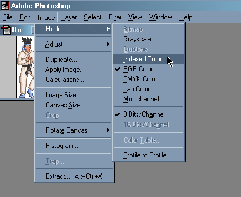
Una ventana aparecerá. En esta ventana, configure la paleta para exactamente. Si está utilizando Photoshop 5 o superior, no haga clic en OK aún. Para versiones anteriores de Photoshop, haga clic en Aceptar, luego convertir a RGB (imagen de -> Modo-> RGB), luego haga clic en la imagen-> Modo-> Color de indexidad nuevamente. 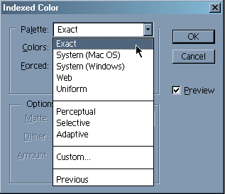
Ahora, seleccione Personalizada en la lista de rollo de paleta para que pueda abrir la ventana de la tabla de color. El siguiente paso es asegurarse de que el color de fondo de su sprite tenga un índice de color de 0 (llamaremos esto y quitar; 0 En m.u.g.e.n, el color 0 es el color enmascarado. Esto significa que todas las partes de un sprite que son 0 no se extraerán.
| 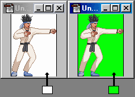 |
| Color index 0 should always be the background color. The actual color (not the index value) is up to you. |
In Photoshop's color table editor, set the top left color (that's color index 0 in Photoshop) to be the background color of the sprite. You will want to make sure that color 0 is a unique color in your palette, otherwise Photoshop will not set the color indices correctly. To do this, you can take the old color 0 color and put it where the bg color used to be (swap the two colors essentially).
Note: If you have used versions of M.U.G.E.N prior to 1.0, the preferred file format used to be PCX instead of PNG. In Photoshop, PCX files have the bottom right color as index 0. With PNG files, it is the top left color.
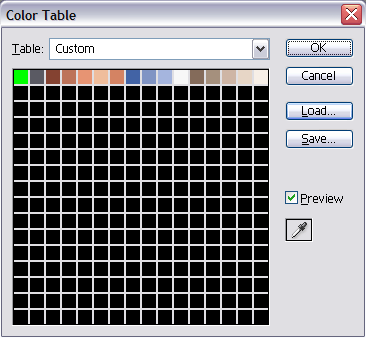Example of a correct palette with background color as color 0 (green in the top left corder).
| 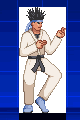 | 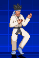 |
| Result of using incorrect palette. | Result of using correct palette. |
Click on the Save button to save this palette (we will call it player.act for the purpose of this tutorial). Now click OK to apply the palette to this image, and the save the file as a PNG file.
The next step is to convert all your other images to this palette that you just created (player.act). You can use the following method:
Palette design is very important early on when making your sprites. Although M.U.G.E.N lets you use up to 255 colors for each sprite, a character with a well-designed palette does not necessarily have to use all the available colors indices. Working with a limited number of colors not only decreases the size of the PNG files, but also makes it easier to create alternate palettes (different color schemes) later on. Pixel sprite art done by hand is easier with a small set of colors (16 to 32), but can become tedious when you have a large palette to work with. On the other hand, pre-rendered sprites may look better with a larger range of colors, at the cost of little extra work. Keep these points in mind when designing your character's palette.
Go to the chars/ directory and make a new directory for your
character. Let's call this character "Player", for an example
(replace "player" with whatever you want to call your character). In
this case, make a directory called chars/player.
You'll need to have these in the chars/player directory:
player.air
player.cmd
player.cns
player.def
player.sff
player.sndYou can make them all from scratch... Or, you can start by using
our example character Kung Fu Man (KFM). KFM's character directory
is located in chars/kfm/, and his work files are in work/kfm/.
The first thing to do is to copy over and rename the files needed for your character. Assuming your player's directory name is "player", these are the files you should copy:
chars/kfm/kfm.air -> chars/player/player.air
chars/kfm/kfm.cns -> chars/player/player.cns
chars/kfm/kfm.cmd -> chars/player/player.cmd
chars/kfm/kfm.def -> chars/player/player.def
|
Ahora hagan hacedor jugador.sff, el archivo sprite del personaje. Contener todos los gráficos utilizados por su carácter. El archivo Sprite se llama SFF y la herramienta que genera se llama srrdake2 (corto para el huella de sprite 2, es una versión más nueva de una herramienta utilizada antes de m.u.g.e.n 1.0).
Nos concentraremos solo haciendo una animación permanente por ahora. Si ya tiene los sprites que desea usar, obtenerlos. Digamos que las animaciones de pie que desea usar son denominadas stand00.png - stand03.png y están en el directorio / trabajo / jugador. Ahora, haga un archivo de texto dentro del trabajo / jugador / y llame a ese archivo Player-SFF.DEF. Aquí está el inicio del archivo de texto que usaría (las líneas de comentarios comienzan con un punto de orden).
|
El número de grupo y el número de imagen que ingresa para cada sprite se usa para acceder a él en el archivo .AIR (Animation). Es solo un par de números que asociarás con el sprite. Por ejemplo, en lugar de referirse a Stand02.pcx, se referirá a 0,2.
El grupo número 0 se usa para marcos de pie. Puede verificar el Air Docs más tarde para los números recomendados para otras acciones de animación. El número de imagen simplemente especifica qué imagen está dentro de un número de grupo en particular. Tienes que conseguir tu propio eje X y Y de tu sprite. Para marcos de pie, generalmente está en la parte inferior en el medio del sprite. Para saltar los sprites, el eje suele ser en el lugar donde estarían los pies del personaje si estaban de pie. Eso generalmente está en el centro debajo del sprite. Puede consultar los sprites de KFM ejecutando M.U.G.E.n y presionando Ctrl-C mientras juega. Esto le brindará a los cajas y cajas de enrorzadores de los personajes. Aquí hay algunos ejemplos de posiciones de ejes.
| 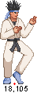 | 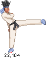 | 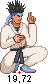 | 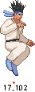 | 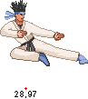 |
El posicionamiento de sus ejes es muy importante. Si están ligeramente apagados entre los sprites, notará sus sprites "Jittering" alrededor. Si realiza errores más grandes, sus sprites pueden terminar en lugares completamente incorrectos.
Una vez que haya jugado. Player.txt listo, vaya al directorio donde tiene mugen.exe y srrfake2.exe, etc. y haga que Jugador.sff escribiendo en el símbolo del sistema:
srrphake2 work \ player \ player-sff.def si obtiene errores o jugador.sff no se hizo, verifique su archivo Player-SFF.DEF para errores. 6. I made the SFF. What's next?
Está bien, ahora que tiene los sprites de pie en el jugador.sff, es hora de animar a su personaje. Para hacer la animación permanente, debe crear una acción por ella (una acción es un bloque de texto que describe una secuencia de sprites para mostrar). Abra el jugador.Air en un editor de texto y prepárese para agregar una acción de animación permanente. Si su jugador.Air es una copia de KFM.AIR, simplemente puede editar el grupo de acción apropiado (acción 0 para la animación permanente).
It's time to make player.air. If you've read the AIR docs, you'll know the format for .air is:
Don't worry about the lines that start with Clsn2 and Clsn2Default for now.Group number, image number, X offset, Y offset, game-ticks, [options]
; Standing Animation [Begin Action 0] ;Action 0 is the standing animation Clsn2Default: 2 Clsn2[0] = -10, 0, 10,-79 Clsn2[1] = -4,-92, 6,-79 0,3, 0,0, 7 ;La línea anterior significa usar Sprite (0,3) (es decir, Grupo 0, imagen número 3) y; mostrarlo para 7 garrapatas. 1 Juego de juegos es 1/60 de un segundo, tiene 60 años; Ticks es 1 segundo. Grupo 0 Imagen 3 es Stand03.pcx. 0,2, 0,0, 7 0,1, 0,0, 7 0,0, 0,0, 7 0,1, 0,0, 7 0,2, 0,0, 7 ;end of file
Ahora, guarda este archivo y está listo para ver cómo se ve su personaje!
7. Saliendo de sus acciones
Si todos los archivos están en el lugar correcto, puede cargar directamente su personaje con m.u.g.e.n escribiendo en el símbolo del sistema:
mugen player playerEste es un acceso directo para el modo versus. Por ahora, no se preocupe si ve advertencias en la parte superior de la pantalla. Las advertencias son una señal de que hay algo mal o falta en su carácter. En este caso, su carácter puede faltar requerir los sprites o las acciones de animación.
Si encuentra un sprite demasiado alto, como si se flota sobre el suelo, tendrá que mover el eje superior. Solo recuerde que el eje está en el nivel de tierra cuando el personaje está en el suelo. Del mismo modo, si su personaje está demasiado lejos, mueva el eje derecho. Una vez que haya ajustado los ejes para todos los sprites correctamente, su personaje no debe deslizarse o imponerse durante la animación.
Si accidentalmente ingresó un grupo de sprite + número de imagen que no existe, entonces no se dibujarán nada. Entonces, si ve su parto parpadeando, debe regresar y verificar su archivo .AIR para ver si los números corresponden a los que se usan para construir su .sff.
8. Continuing with Actions and Sprites
After making the standing frames, you can proceed to walking, then jumping. Now that you know the basics of making sprites and actions, you should continue by making the required sprites from spr.html and required actions from the Reserved Action Numbers in the AIR docs. When you're done, all the warnings at the top of the screen should go away.
In part 2 of the tutorial, you'll be able to define your character's bounding boxes so they can get hit and hit other characters. Finally, we'll show you how to define some attacks in the .cns.
Tutorial 1 | 2 | 3 | 4Next is Tutorial Part 2